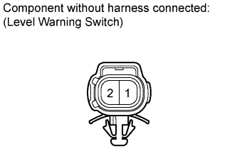
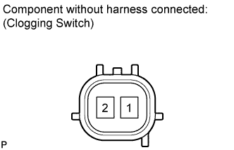

FUEL FILTER > INSPECTION |
| 1. INSPECT FUEL FILTER ASSEMBLY |
Inspect the level warning switch.
 |
Measure the resistance according to the value(s) in the table below.
| Tester Connection | Condition | Specified Condition |
| 1 - 2 | Float upper end position | Below 1 Ω |
| 1 - 2 | Float lower end position | 1 MΩ or higher |
Inspect the clogging switch.
 |
Measure the resistance according to the value(s) in the table below.
| Tester Connection | Condition | Specified Condition |
| 1 - 2 | 20°C (68°F) | Below 1 Ω |